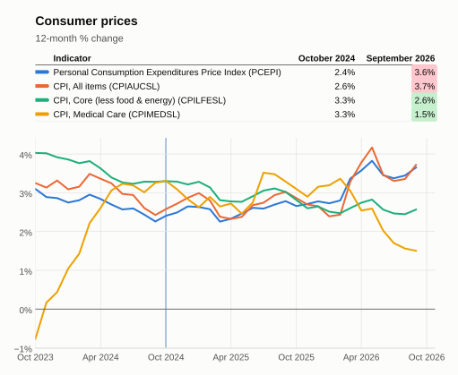
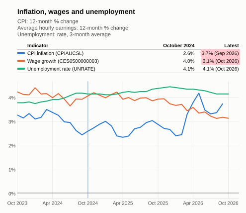
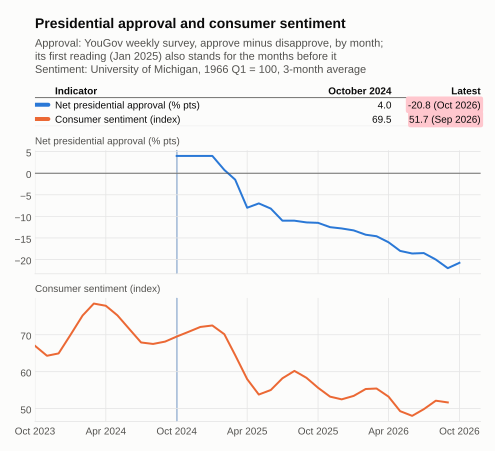

Consumer
Updated Nov 13, 2026 at 18:55 PST
Each indicator compares its most recently available value to that of the baseline period, Oct 2023–Oct 2024. Values are computed monthly.
On a case by case basis, some indicators may have additional adjustments: e.g. 3-month averaging for highly variable series, or normalization by inflation.
Summary
- Improving: 10
- Worsening: 10
- Neutral: 1
Hover over or tap a dotted-underlined column header for its description. Click an indicator to see its chart since the start of the baseline period, with a blue line at its end.
The economic series being tracked. Its definition and any adjustments are described below the table. | The indicator's average over the baseline period, Oct 2023–Oct 2024, after any adjustments. | The indicator's average over the most recent months, after the same adjustments. When a series has no data yet for those months, its latest available value is used. | The unit the series is published in by its source, for example billions of dollars or an index level. | How far the indicator has moved from the baseline value to the current value. Shaded green when the indicator moved in its good direction and red when it moved the other way; neutral indicators and unchanged values are not shaded. Bold when larger than 10 (in either direction) and measured in % or % pts, to flag the biggest moves. | How the Delta is measured: % is a percent change, used for levels, prices and indexes; % pts (percentage points) is a simple difference, used for series that are already rates, such as an unemployment rate; Δ is a simple difference in the series' own units, used for index readings where a percent change would mislead. | Which way is good news: rising means a rise is an improvement, falling means a fall is an improvement, and neutral means the move is shown but not judged. |
|---|---|---|---|---|---|---|
| Real personal income | 16,461.40 | 17,050.63 | Billions of Chained 2017 Dollars | 3.58 | % | rising |
| Real personal consumption expenditures | 15,875.50 | 16,944.93 | Billions of Chained 2017 Dollars | 6.74 | % | rising |
| Personal Consumption Expenditures Price Index | 2.71 | 3.65 | Index 2017=100, Seasonally Adjusted | 0.94 | % pts | falling |
| CPI, all items | 3.04 | 3.72 | Index 1982-1984=100, Seasonally Adjusted | 0.67 | % pts | falling |
| CPI, core (food & energy excluded) | 3.60 | 2.57 | Index 1982-1984=100, Seasonally Adjusted | -1.03 | % pts | falling |
| CPI, medical care | 2.02 | 1.50 | Index 1982-1984=100, Seasonally Adjusted | -0.51 | % pts | falling |
| Real retail & food services sales | 214,560.87 | 220,706.67 | Millions of 1982-84 CPI Adjusted Dollars | 2.86 | % | rising |
| Employment-Population Ratio | 80.75 | 80.55 | % | -0.20 | % pts | rising |
| Nonfarm payrolls | 157,269.08 | 159,094.50 | Thousands of Persons | 1.16 | % | rising |
| Unemployment rate | 3.92 | 4.13 | % | 0.21 | % pts | falling |
| Initial jobless claims | 220,273.72 | 203,631.25 | Persons | -7.56 | % | falling |
| Real average hourly earnings | 37.61 | 38.00 | Dollars per Hour | 1.02 | % | rising |
| Regular gasoline price | 3.36 | 4.33 | Dollars per Gallon | 28.96 | % | falling |
| 30-Year Fixed Mortgage Rate | 6.85 | 7.09 | % | 0.25 | % pts | falling |
| Personal saving rate | 6.47 | 4.10 | % | -2.37 | % pts | rising |
| Consumer credit outstanding | 5,012,925.21 | 5,203,126.60 | Millions of Dollars | 3.79 | % | neutral |
| Household debt service ratio | 11.09 | 11.11 | Percent | 0.02 | % pts | falling |
| Consumer loan delinquency rate | 2.70 | 2.62 | % | -0.08 | % pts | falling |
| S&P 500 (wealth effect) | 5,122.63 | 7,698.05 | Index | 50.28 | % | rising |
| Net President approval rating: %Approve - %Disapprove | 4.00 | -21.38 | % | -25.38 | % pts | rising |
| Consumer sentiment - University of Michigan Survey | 70.57 | 51.67 | Index 1966:Q1=100 | -26.79 | % | rising |


Consumer Price Index

Inflation, Wages and Unemployment

While unemployment has held steady, hourly wages has slowed from 4% to 3%, and inflation has risen by more than 1.1% to 3.7%. Overall this is a negative situation for the consumer.
Consumer Surveys

Both surveys show a strong deterioration of consumers' feelings and expectations about their situation and prospects, as well as the president.
What each indicator means
- Real personal income: Personal income is the income that persons receive in return for their provision of labor, land, and capital used in current production activities, excluding transfer payments.
Smoothed with a trailing 3-month average.
Reference: [1] - Real personal consumption expenditures: Primary measure of consumer spending on goods and services in the U.S. economy
Smoothed with a trailing 3-month average.
Reference: [2] - Personal Consumption Expenditures Price Index: Consumer price index - including contributions by third parties (e.g. healthcare) and changes in spending allocation
Converted to the 12-month percent change.
Reference: [3] - CPI, all items: Consumer Price Index for All Urban Consumers: Direct out-of-pocket expenses for All Items
Converted to the 12-month percent change.
Reference: [4] - CPI, core (food & energy excluded): Consumer Price Index for All Urban Consumers: Direct out-of-pocket expenses for All Items Less Food and Energy
Converted to the 12-month percent change.
Reference: [5] - CPI, medical care: Consumer Price Index for All Urban Consumers: Medical Care in U.S. City Average - out-of-pocket medical care services and goods, plus health insurance premiums retained by insurers
Converted to the 12-month percent change.
Reference: [6] - Real retail & food services sales: Real retail & food services sales measure the total inflation-adjusted sales of retail and food service establishments, reflecting consumer spending trends.
Smoothed with a trailing 3-month average.
Reference: [7] - Employment-Population Ratio: Employment-Population Ratio - 25-54 Yrs, Seasonally Adjusted.
Smoothed with a trailing 3-month average.
Reference: [8] - Nonfarm payrolls: Nonfarm payrolls represent the total number of paid U.S. workers of any business, excluding general government employees, private household employees, employees of nonprofit organizations, and farm employees.
Smoothed with a trailing 3-month average.
Reference: [9] - Unemployment rate: The unemployment rate measures the percentage of the total labor force that is unemployed but actively seeking employment and willing to work.
Smoothed with a trailing 3-month average.
Reference: [10] - Initial jobless claims: 4-Week Moving Average of Initial Claims (Initial Jobless Claims), reflecting short-term labor market conditions.
Smoothed with a trailing 3-month average.
Reference: [11] - Real average hourly earnings: Real average hourly earnings represent the inflation-adjusted earnings of workers per hour, reflecting changes in purchasing power.
Adjusted for inflation with price index CPIAUCSL, in today's prices.
References: [12], [4] - Regular gasoline price: Regular gasoline price represents the average price per gallon of regular gasoline, reflecting consumer fuel costs.
Reference: [13] - 30-Year Fixed Mortgage Rate: Key indicator of long-term borrowing costs for consumers and for housing markets, influencing mortgage affordability.
Reference: [14] - Personal saving rate: Personal saving rate is calculated as the ratio of personal saving to disposable personal income, indicating household financial health.
Smoothed with a trailing 3-month average.
Reference: [15] - Consumer credit outstanding: Neutral by design: credit growth is demand when incomes rise and distress when they do not, providing insight into consumer credit conditions.
Smoothed with a trailing 3-month average.
Reference: [16] - Household debt service ratio: Better stress read than credit levels; normalizes debt to income, indicating household leverage and financial stability.
Reference: [17] - Consumer loan delinquency rate: Consumer loan delinquency rate measures the share of consumer loans that are past due, indicating financial stress among households.
Reference: [18] - S&P 500 (wealth effect): 500 leading companies in leading industries, which are publicly held on either the NYSE or NASDAQ, and covers 75% of U.S. equities. Dividends are not included.
Reference: [19] - Net President approval rating: %Approve - %Disapprove: President's net approval rating compiled by YouGov, calculated as the difference between approval and disapproval percentages. Average of the weekly surveys.
Reference: [20] - Consumer sentiment - University of Michigan Survey: Consumer sentiment from the University of Michigan Survey reflects household confidence in the economy, influencing spending and saving behavior.
Smoothed with a trailing 3-month average.
Reference: [21]
Prices for core expenditures, have risen modestly, yet prices for food and energy have had a larger negative impact.